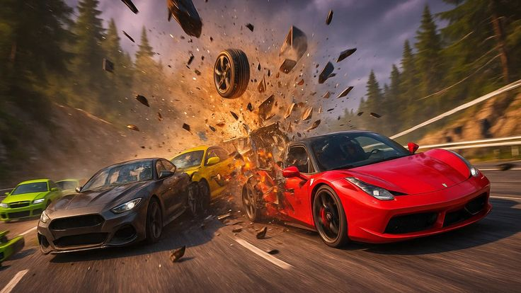

Welcome
You have entered Donald Stampley's world of gaming — where every moment is intense, competitive, and unforgettable.
Gaming Overview
Gaming is one of the most popular forms of entertainment in the world today. It allows players to explore different worlds, complete missions, and compete with others. It combines strategy & creativity in exciting ways.

Featured
Action Gallery
This gallery highlights moments from gaming worlds and action scenes.
Featured Video
Many people enjoy gaming because it builds problem-solving skills, teamwork, and creativity. With practice and dedication, gaming can also become a serious hobby or even a career. Players often discover new interests through game communities.
- Action Games
- Adventure Games
- Multiplayer Online Games